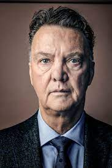

| Leeftijd | 70jaar |
|---|---|
| Geboortedatum | 8 augustus 1951 |
| Nationaliteit | Nederlands |
| Geboorteplaats | Amsterdam |
| Baan(functie) | Bondscoach Nederlands Elftal |
-Louis van Gaal is opgegroeid in
een katholiek gezin in Amsterdam
-1962: Zijn vader is overleden.
-opleiding Academie voor Lichamelijke opvoeding gevolgd.
-1971: Gespeeld bij het tweede elftal van Ajax
-1972-1987: Actief als profvoetballer.
Hij speelde als middenvelder.
-1973: getrouwd met zijn eerste vrouw
-1974: vrouw overleden aan gevolgen van alveesklierkanker
-1987-heden: De trainerloopbaan.
Actief geweest als trainer bij meerdere voetbalclubs.
Nu is hij actief als Bondscoach van Nederlands Elftal.